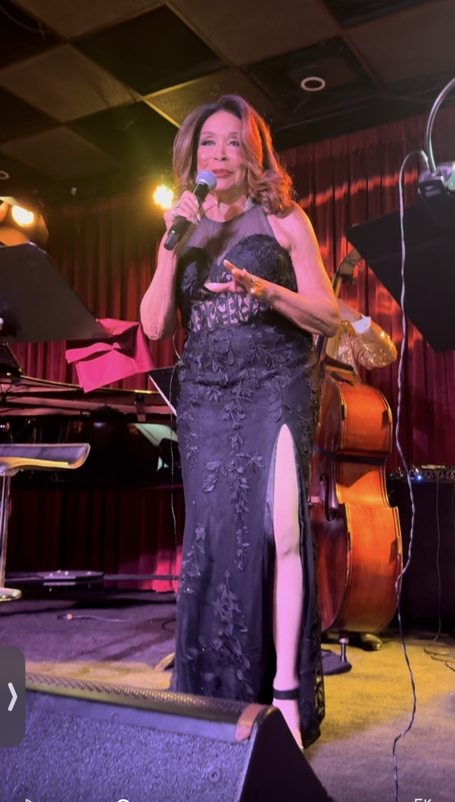
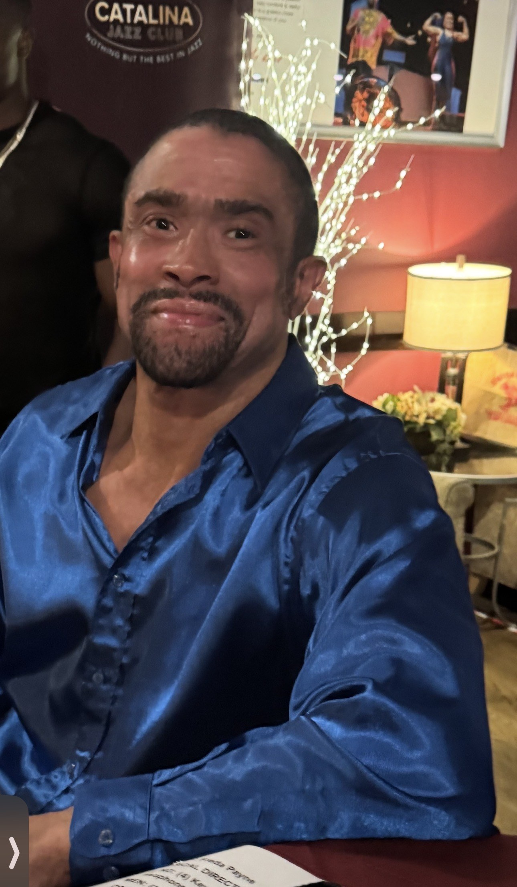
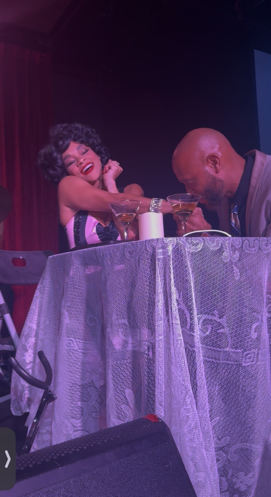
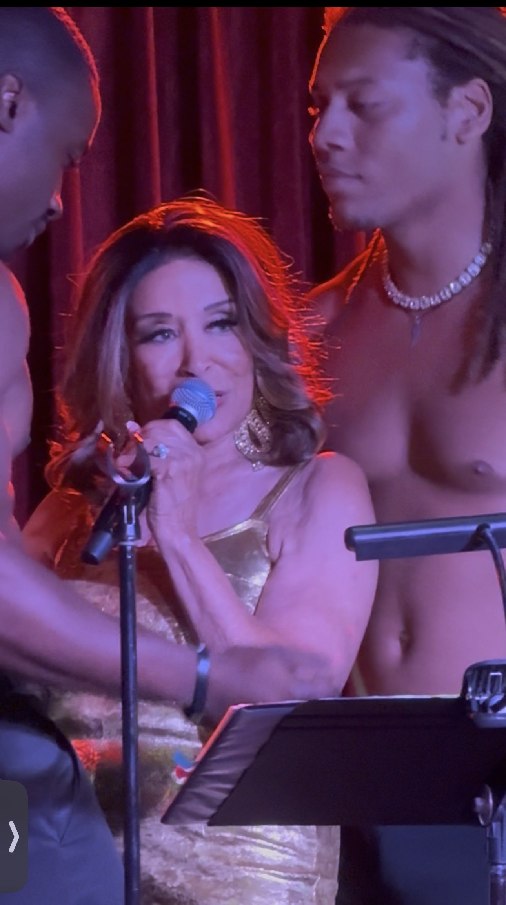

Freda Payne Made Time Stand Still
At 84, in gold lamé and black lace, she sang nine legends back into a sold-out Los Angeles room, gave thanks to God from the stage, and delivered a triumph.
LOS ANGELES · September 30, 2026 at 7:42 AM Pacific · By Gospel News Access Staff

One week after her eighty-fourth birthday, Freda Payne walked out at the Catalina Jazz Club in Los Angeles and made time stand still.
That is not a figure of speech. For as long as the show ran, the room stopped being a room on a Saturday night in Hollywood and became something older and softer, a place where the great women of American song were, for a while, present again.
It was an outstanding night. It was the hottest ticket in Hollywood on a weekend when the MTV Video Music Awards had every other camera in Los Angeles, and it deserved every seat in the house.
Payne’s own note, printed on the night’s running sheet, begins the way the evening felt. “Last week on September 19th, was my birthday. I am so blessed to see another year and still be working. I thank God for that.”
Nine women, one voice
“Freda Payne Portrays and Honors Legendary Ladies of Song” was written and directed by Donald B. Welch, and it is a small masterpiece of a difficult form. Tribute shows usually feel like a museum. Welch built a living room. The idea, Payne said, was his: “He said, Freda, I want you to do this show honoring several ladies.”
The ladies were Ella Fitzgerald, Sarah Vaughan, Peggy Lee, Gloria Lynne, Dakota Staton, Lena Horne, Nancy Wilson, Dinah Washington and Eartha Kitt. Payne sang for each of them. “All these ladies were some of my favorite singers back when I started wanting to be a professional singer,” she said.

She opened with “How High the Moon,” Ella Fitzgerald’s signature, and sang “I Wish You Love” for Gloria Lynne, “Body and Soul” for Sarah Vaughan and “Guess Who I Saw Today” for Nancy Wilson. Each one arrived like a letter from an old friend.
A voice that soothes
Soothing is the word that keeps coming back. Payne’s voice is unhurried and warm, and it works on a room the way a hand works on a shoulder. It is the voice of a woman who has sung for six decades and has nothing left to prove and nothing left to hide.
She described Sarah Vaughan’s voice the same way, as “like listening to a violin or a viola. Very soothing.” The two singers met, and Payne came to know her. The compliment runs both directions.
A girl at Idlewild
The number that carried her furthest back was Dakota Staton’s “The Late Late Show.” Payne was sixteen, living in Detroit, and spending summers at Idlewild, the Black resort community in Michigan, where her mother had a cottage.
“My sister and I were allowed to go to the matinees because we couldn’t go to the nightclubs at night,” she said. “We were still in our teens. And I remember her song.”
Sixty-odd years later she sang it from a Hollywood stage, in gold, to a full house. The sixteen-year-old and the legend were in the same room, and the room was lucky to have both.
Dinah Washington, whom Payne met young and feared at first, is the other side of that memory. “I think it’s because I kind of stood up to her,” Payne said of how the older singer came around. “She could tell I was no pushover.” Washington died at thirty-nine.
A mother and her son
The evening was announced by Payne’s son, Gregory Abbott Jr., who introduced the special guest and then his mother. He did it with the ease of a man who knows the room. She named him twice in conversation afterward, and each time it was plain which credit mattered most to her. “Most important of all too, my son.”


The company
Thomasina Gross opened the show as Eartha Kitt, a portrayal Payne called “spot on,” and it is. In one staged scene Gross sat at a candlelit table with two martinis and a man in a suit, and held the whole room with a stillness that the photographs catch better than any description.

The band was of the first rank. Josh Nelson was musical director at the piano, and Payne called him one of the best. Chris Colangelo played bass, Ricky Woodard saxophone and Marcello Carelli drums. The cast also included actors Terryl DaLuz and Kyrel Jaundoo, with Chuka Aruh and Mi-cha-El Wat as escorts.
And then, Fever
A thanksgiving is allowed to be glamorous, and this one was. For Peggy Lee, Payne sang “Fever,” and she brought two men up onto the stage to sing it with, on her own birthday weekend, in gold. She was a show-stopping diva, and she looked magnificent.

Hollywood came out
Stefanie Powers and Loretta Devine were in the room, along with a good many other familiar faces from the entertainment industry. Nobody came to be seen. They came to see her, and word of the night has been moving through Los Angeles ever since.

Payne sails at the end of October aboard Holland America, performing on a cruise from Fort Lauderdale to Puerto Rico and back, with Darlene Love and Wayne Newton on the bill. Anyone who can get on that ship should.
She spent Saturday night saying thank you, and Los Angeles spent it saying the same thing back. It was, from first note to last, a triumph.
Watch
Credits
- Production
- Freda Payne Portrays and Honors Legendary Ladies of Song
- Presented by
- Don B. Welch
- Written and directed by
- Donald B. Welch
- Starring
- Freda Payne
- Special guest
- Thomasina Gross as Eartha Kitt
- Host and announcer
- Gregory Abbott Jr.
- Actors
- Terryl DaLuz, Kyrel Jaundoo
- Escorts
- Chuka Aruh, Mi-cha-El Wat
- Musical director and piano
- Josh Nelson
- Bass
- Chris Colangelo
- Saxophone
- Ricky Woodard
- Drums
- Marcello Carelli
- Honoring
- Ella Fitzgerald, Sarah Vaughan, Peggy Lee, Gloria Lynne, Dakota Staton, Lena Horne, Nancy Wilson, Dinah Washington, Eartha Kitt
- Venue
- Catalina Jazz Club, 6725 Sunset Blvd, Los Angeles
- Date
- Saturday, September 26, 2026
- Photographs
- Terry Bryant